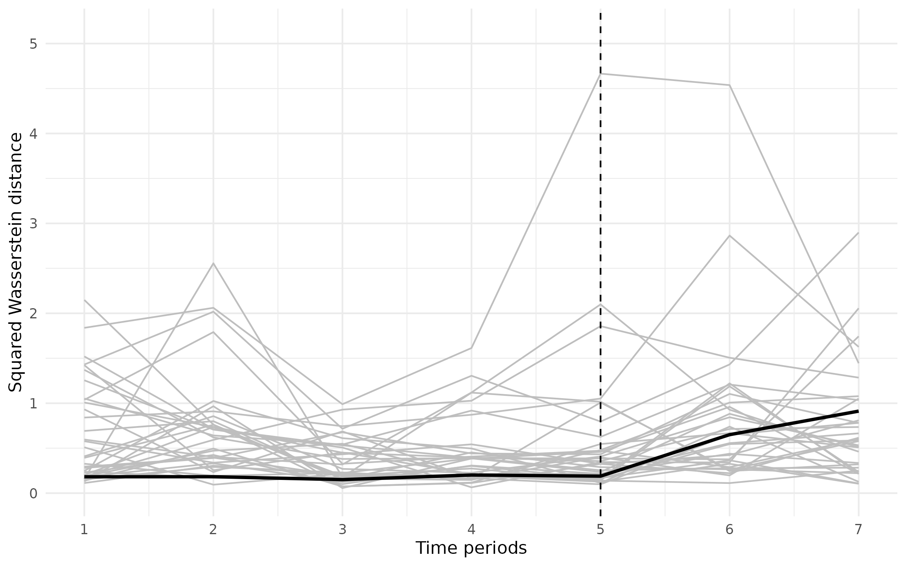
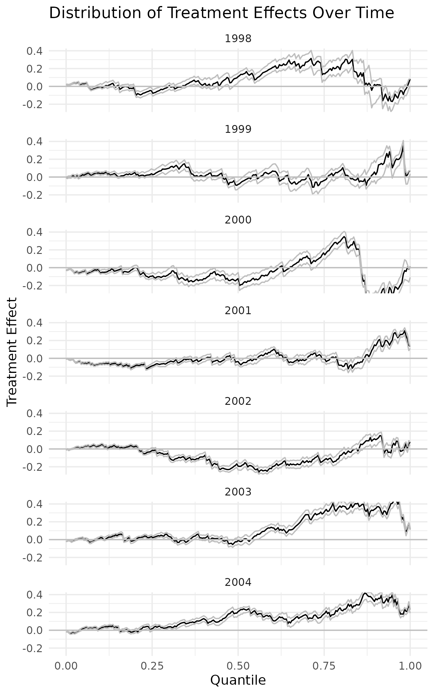

Empirical Application in Gunsilius (2023)
David Van Dijcke
2023-12-09
Source:vignettes/Dube2019.Rmd
Dube2019.RmdIntroduction
This vignette demonstrates how to use the DiSCo package by way of the
empirical application in Gunsilius (2023),
which is based on Dube (2019). We
illustrate the use of the two main functions: 1) DiSCo,
which estimates the raw distributional counterfactuals, computes
confidence intervals, and optionally performs a permutation test; and 2)
DiSCoTEA, the “Treatment Effect Aggregator”, which takes in
the distributional counterfactuals and computes aggregate treatment
effects using a user-specified aggregation statistic.
Distributional Synthetic Controls
We briefly review the main idea behind Distributional Synthetic
Controls. Denote \(Y_{jt,N}\) the
outcome of group \(j\) in time period
\(t\) in the absence of an
intervention. Also denote \(Y_{jt,I}\)
the outcome in the presence of an intervention at time \(t > T_0\). Denote the quantile function,
\[
F^{-1}(q):=\inf _{y \in \mathbb{R}}\{F(y) \geq q\}, \quad q \in(0,1),
\] where \(F(y)\) is the
corresponding cumulative distribution function. One unit \(j=1\) has received treatment, while the
other units \(j=2,\ldots,J\) have not.
Then the goal is to estimate the counterfactual quantile function \(F_{Y_{1 t}, N}^{-1}\) of the treated unit
had it not received treatment by an optimally weighted average of the
control units’ quantile functions, \[
F_{Y_{1 t}, N}^{-1}(q)=\sum_{j=2}^{J+1} \lambda_j^* F_{Y_{j t}}^{-1}(q)
\quad \text { for all } q \in(0,1)
\]
In practice, we do this by solving the following optimization problem:
\[
\vec{\lambda}_t^*=\underset{\vec{\lambda} \in
\Delta^J}{\operatorname{argmin}} \int_0^1\left|\sum_{j=2}^{J+1}
\lambda_j F_{Y_{j t}}^{-1}(q)-F_{Y_{1 t}}^{-1}(q)\right|^2 d q
\]which gives an optimal weight for each unit-period combination.
This problem can be solved by a simple weighted regression, which is
implemented in the DiSCo_weights_reg function. To obtain
the overall optimal weights \(\vec{\lambda}^*\), we take the average of
the optimal weights across all periods.
Basic Usage
To get coding, we load the data from Dube (2019), which is available in the package.
data("dube")
head(dube)
# time_col id_col y_col
# 1: 1998 1 2.7912171
# 2: 1998 1 0.1659509
# 3: 1998 1 1.6747302
# 4: 1998 1 2.0880055
# 5: 1998 1 3.6397150
# 6: 1998 1 1.8608114To learn more about the data, just type ?dube in the
console. We have already renamed the outcome, id, and time variables to
y_col, id_col, and time_col,
respectively, which is required before passing the dataframe to the
DiSCo command. We also need to set the two following parameters:
id_col.target <- 2
t0 <- 2003which indicate the id of the treated unit and the time period of the intervention, respectively. We can now run the DiSCo command:
df <- copy(dube)
disco <- DiSCo(df, id_col.target, t0, G = 1000, num.cores = 2, permutation = TRUE, CI = TRUE, boots = 1000, graph = TRUE, simplex=TRUE, seed=1)
# Computing confidence intervals for period: 1998
# Computing confidence intervals for period: 1999
# Computing confidence intervals for period: 2000
# Computing confidence intervals for period: 2001
# Computing confidence intervals for period: 2002
# Computing confidence intervals for period: 2003
# Computing confidence intervals for period: 2004
# Starting permutation test...Permutation finished!
where we have chosen a grid (G) of 1000 quantile and
opted for parallel computation with 2 cores to speed up the permutation
test and confidence intervals (CI is set to
TRUE), which we calculate using 500 resamples
(boots). We also set the seed explicitly in
the function call, which ensures reproducibility across the parallel
cores.
The returned disco object contains a host of information
produced by the command. Typing ?DiSCoT in the console
pulls up the help files which lay out the precise structure of the
returned object. For now, we will just have a look at the estimated
weights,
# retrieve the weights
weights <- disco$Weights_DiSCo_avg
# retrieve the control unit IDs
controls <- disco$control_ids
# store in a dataframe
weights_df <- data.frame(weights = weights, fips = controls)
# merge with state fips codes (built into the maps package)
weights_df <- merge(weights_df, maps::state.fips, by = "fips")
setorder(weights_df, -weights)
print(weights_df)
# fips weights ssa region division abb polyname
# 12 24 1.186556e-01 21 3 5 MD maryland
# 34 51 1.008450e-01 49 3 5 VA virginia:chesapeake
# 35 51 1.008450e-01 49 3 5 VA virginia:main
# 36 51 1.008450e-01 49 3 5 VA virginia:chincoteague
# 20 33 8.173559e-02 30 1 1 NH new hampshire
# 25 38 7.586657e-02 35 2 4 ND north dakota
# 18 31 7.351458e-02 28 2 4 NE nebraska
# 21 35 6.323485e-02 32 4 8 NM new mexico
# 4 8 5.865657e-02 6 4 8 CO colorado
# 29 45 5.372624e-02 42 3 5 SC south carolina
# 13 26 5.168543e-02 23 2 3 MI michigan:south
# 14 26 5.168543e-02 23 2 3 MI michigan:north
# 8 19 4.900108e-02 16 2 4 IA iowa
# 11 22 4.718392e-02 19 3 7 LA louisiana
# 16 29 4.710395e-02 26 2 4 MO missouri
# 33 49 3.618461e-02 46 4 8 UT utah
# 32 48 3.098754e-02 45 3 7 TX texas
# 5 13 2.789892e-02 11 3 5 GA georgia
# 38 56 2.764866e-02 53 4 8 WY wyoming
# 19 32 2.412182e-02 29 4 8 NV nevada
# 22 37 1.574197e-02 34 3 5 NC north carolina:knotts
# 23 37 1.574197e-02 34 3 5 NC north carolina:spit
# 24 37 1.574197e-02 34 3 5 NC north carolina:main
# 7 18 1.230765e-02 15 2 3 IN indiana
# 30 46 3.899512e-03 43 2 4 SD south dakota
# 1 1 1.486812e-16 1 3 6 AL alabama
# 37 54 1.210699e-16 51 3 5 WV west virginia
# 17 30 8.053257e-17 27 4 8 MT montana
# 2 4 2.680380e-17 3 4 8 AZ arizona
# 31 47 2.591531e-17 44 3 6 TN tennessee
# 27 40 1.615722e-17 37 3 7 OK oklahoma
# 28 42 -4.227009e-18 39 1 2 PA pennsylvania
# 26 39 -1.708190e-17 36 2 3 OH ohio
# 9 20 -3.531062e-17 17 2 4 KS kansas
# 15 28 -3.747543e-17 25 3 6 MS mississippi
# 3 5 -2.273750e-16 4 3 7 AR arkansas
# 10 21 -2.314121e-16 18 3 6 KY kentucky
# 6 16 -2.319602e-16 13 4 8 ID idahoWhen we ran the DiSCo command, we set
permutation to TRUE, which runs the
permutation test described in the paper (see ?DiSCo_per for
more details). This will allow us to inspect the permutation inference
results below. Already, by setting graph to
TRUE, the function displayed a plot of the full
distribution of permutation tests. The black solid line shows the fit of
the “true” synthetic control. The fact that it does not diverge stronger
than the other lines in gray after treatment suggests that the treatment
had no effect.
For context, the y-axis is the squared Wasserstein distance between the counterfactual and observed quantile functions, \[ d_{t t}^2:=\int_0^1\left|F_{Y_{u t, N}}^{-1}(q)-F_{Y_{u t}}^{-1}(q)\right|^2 d q \]and, as in Abadie, Diamond, and Hainmueller (2010) we take the ratio of post- to pre-intervention Wasserstein distance to account for variation in the pre-treatment fit across placebo tests, \[ r_j=\frac{R_j\left(T_0+1, T\right)}{R_j\left(1, T_0\right)} \] and calculate the p-value for the permutation test as, \[ p=\frac{1}{J+1} \sum_{j=1}^{J+1} H\left(r_j-r_1\right), \]where \(H(x)\) is the Heaviside function which is 1 if \(x\geq 0\) and 0 otherwise. This p-value gives the probability of observing a placebo test with a larger ratio than the true treatment effect. It can be retrieved by calling
summary(disco$perm)
# Permutation test for quantile range: [0, 1]
# P-value: 0.176
# Number of control units: 33The p-value is larger than 0.05, which confirms the visual result from the plot above, while accounting for potential differences in pre-treatment fit across placebo units.
Finally, we can use the DiSCo Treatment Effect Aggregator
(DiSCoTEA) function to aggregate the resulting
counterfactual quantile functions into various treatment effect
measures. For example, we can calculate the difference between the
counterfactual and observed quantile functions as follows.
discot <- DiSCoTEA(disco, agg="quantileDiff", graph=TRUE)
summary(discot)
#
# Call:
# DiSCoTEA(disco = disco, agg = "quantileDiff", graph = TRUE)
#
# Reference: Gunsilius, Florian F. "Distributional synthetic controls." Econometrica 91, no. 3 (2023): 1105-1117.
#
# Aggregated Distribution Differences, Quantile Δ
# Time X_from X_to Quantile Δ Std. Error [95% Conf. Band]
# 2003 0.00 0.25 -0.0436 0.0090 -0.0598 -0.0246 *
# 2003 0.25 0.50 0.0355 0.0126 0.0121 0.0609 *
# 2003 0.50 0.75 0.1702 0.0160 0.1403 0.2004 *
# 2003 0.75 1.00 0.7026 0.0526 0.5957 0.8016 *
# 2004 0.00 0.25 0.0952 0.0086 0.0797 0.1127 *
# 2004 0.25 0.50 0.1259 0.0115 0.1038 0.1477 *
# 2004 0.50 0.75 0.2233 0.0152 0.1934 0.2527 *
# 2004 0.75 1.00 1.1784 0.0503 1.0763 1.2679 *
# ---
# Signif. codes: `*' Confidence band for distribution differences does not cover 0
#
# Permutation test for quantile range: [0, 1]
# P-value: 0.176
# Number of control units: 33
# Number of pre-treatment periods: 5
# Number of post-treatment periods: 2
# N=652,870Calling summary on the returned object prints a table
summarizing the effects across the distribution. You can choose the
intervals of quantiles over which it aggregates using the
samples parameter. If you calculated the permutation test
and confidence intervals in the DiSCo function, these are
reported as well.
Setting graph to TRUE also prints a plot of
the distribution differences over time You can focus on specific years
using the t_plot parameter. You can use the other
parameters of the DiSCOTEA function to adjust the basic
appearance of the plots, or directly alter the returned ggplot object
that is stored in the returned DiSCoT object.
Looking at the plot of the quantile differences, there appear to be positive effects of the minimum wage increase on household income for the upper quantile. That seems a little strange. The first indication that this is probably a spurious result comes from the permutation test, which could not reject the hypothesis test of there being no effect.
Robustness tests
The package offers various ways to further test suspected effects. For example, we can focus on a specific part of the distribution, and construct a separate synthetic control for it. Mathematically, this comes down to,
\[ \vec{\lambda}_t^*=\underset{\vec{\lambda} \in \Delta^J}{\operatorname{argmin}} \int_{\text{q_min}}^{\text{q_max}}\left|\sum_{j=2}^{J+1} \lambda_j F_{Y_{j t}}^{-1}(q)-F_{Y_{1 t}}^{-1}(q)\right|^2 d q, \]
where \(\text{q_min} < \text{q_max}\) are the bounds of the quantile range we’re interested in. Doing this in R is as simple as,
disco <- DiSCo(dube, id_col.target=id_col.target, t0=t0, G = 250, num.cores = 2, permutation = TRUE, CI = TRUE, boots = 1000, graph = FALSE, q_min = 0.7, q_max=0.95, seed=1, simplex=TRUE)
# Computing confidence intervals for period: 1998
# Computing confidence intervals for period: 1999
# Computing confidence intervals for period: 2000
# Computing confidence intervals for period: 2001
# Computing confidence intervals for period: 2002
# Computing confidence intervals for period: 2003
# Computing confidence intervals for period: 2004
# Starting permutation test...Permutation finished!where we set the lower bound to 0.75 since that where the effects
start appearing clearly, and the upper bound to 0.95 to account for the
fact that the CPS data used in Dube (2019)
is imputed for the top income quantiles, which may explain the erratic
behavior of the estimator at those quantiles. Another way one could try
to deal with irregularity in the estimated quantile functions is by
using the qmethod option in the DiSCo command,
which allows for the use of alternative quantile estimation methods that
can account for non-smoothness and extreme values. As above, we plot the
results using the DiScoTEA function:
discot <- DiSCoTEA(disco, agg="quantileDiff", graph=TRUE)
summary(discot)
#
# Call:
# DiSCoTEA(disco = disco, agg = "quantileDiff", graph = TRUE)
#
# Reference: Gunsilius, Florian F. "Distributional synthetic controls." Econometrica 91, no. 3 (2023): 1105-1117.
#
# Aggregated Distribution Differences, Quantile Δ
# Time X_from X_to Quantile Δ Std. Error [95% Conf. Band]
# 2003 0.7 0.95 0.1313 0.0114 0.1092 0.1536 *
# 2004 0.7 0.95 0.1430 0.0112 0.1220 0.1663 *
# ---
# Signif. codes: `*' Confidence band for distribution differences does not cover 0
#
# Permutation test for quantile range: [0.7, 0.95]
# P-value: 0.0588
# Number of control units: 33
# Number of pre-treatment periods: 5
# Number of post-treatment periods: 2
# N=652,870For this restricted range of quantiles, the estimator appears to produce a slightly better — though not perfect – pre-treatment fit. We still observe the positive effects in the post-treatment periods, but the restricted permutation test is still not significant. Overall, we cannot reject the null hypothesis of there being no effect of the treatment.
Conclusion
In this vignette, we have demonstrated the DiSCo package using the
data from the empirical application in Gunsilius
(2023). We estimated the difference in between the quantile
functions of the distributional synthetic control constructed with the
DiSco command and the observed quantile function. To test
for the presence of treatment effects, we inspected the pre-treatment
distributional fit, carried out a permutation test, and re-estimated the
synthetic control for a restricted quantile range; all these robustness
tests are available in the DiSCo package, together with handy graphing
and aggregation tools.